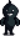
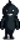

Shadow Sniper
Jump to navigation
Jump to search
| Shadow Sniper | |
| Information | |
| Spawns In: | The Mines |
| Floors: | 81-119 |
| Killable: | Yes |
| Base HP: | 300 |
| Base Damage: | 18 |
| Base Def: | 2 |
| Speed: | 3 |
| XP: | 20 |
| Variations: |  Shadow Brute Shadow Brute (dangerous) |
| Drops: | If reached bottom of Mines: |
Shadow Snipers are an enemy found in the Mines after activating the Shrine of Challenge or during the Danger In The Deep quest. 150 void spirits (any type) need to be killed for the Monster Eradication Goal at the Adventurer's Guild.
It is one of the difficult counterparts of the Shadow Brute.
Behavior
Shoots at the player from a distance and inflicts the Darkness debuff on hit.
Strategy
Approach them from an angle, where they cannot physically hurt you, due to their limitation of only being able to shoot in a straight line.
History
- 1.5: Introduced.